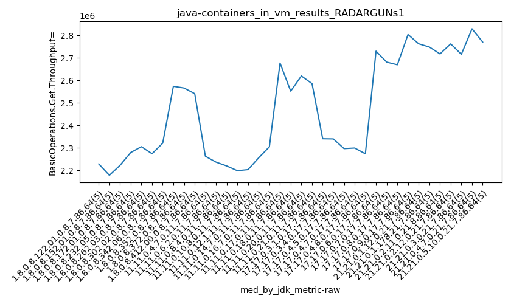
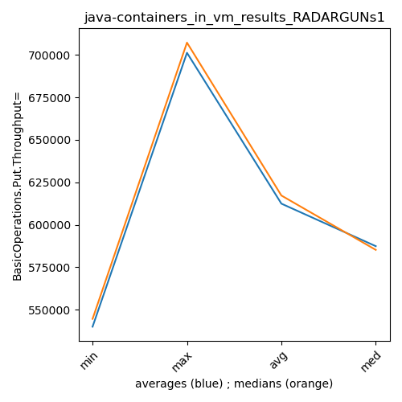

java- RADARGUNs1
Context at bottom
/home/jvanek/git/benchmarks-in-nested-virtualisation-toolchain/final_results/containers_in_vm_results/containers_in_vm_results_JMH
java-
RADARGUNs1
/home/jvanek/git/benchmarks-in-nested-virtualisation-toolchain/final_results/containers_in_vm_results/containers_in_vm_results_J2DBENCH
java-
RADARGUNs1
/home/jvanek/git/benchmarks-in-nested-virtualisation-toolchain/final_results/containers_in_vm_results/containers_in_vm_results_RADARGUNs3
java-
RADARGUNs1
/home/jvanek/git/benchmarks-in-nested-virtualisation-toolchain/final_results/containers_in_vm_results/containers_in_vm_results_SPECJBB
java-
RADARGUNs1
/home/jvanek/git/benchmarks-in-nested-virtualisation-toolchain/final_results/containers_in_vm_results/containers_in_vm_results_RADARGUNs1
java-
RADARGUNs1
containers_in_vm_results_RADARGUNs1
- containers_in_vm_results_RADARGUNs1 - throughput get
- containers_in_vm_results_RADARGUNs1 - throughput put
- containers_in_vm_results_RADARGUNs1 - response mean time get
- containers_in_vm_results_RADARGUNs1 - response mean time put
containers_in_vm_results_RADARGUNs1 - throughput get
Expected number of java- JDKs: 37
1st avgmed_alljdks_metric:
/home/jvanek/git/benchmarks-in-nested-virtualisation-toolchain/final_results/result_processing.py /home/jvanek/git/benchmarks-in-nested-virtualisation-toolchain/final_results/containers_in_vm_results/containers_in_vm_results_RADARGUNs1 BasicOperations.Get.Throughput= False
values: [2177376, 2339239, 2229157, 2204156, 2366318, 2178538, 2136640, 2188359, 2157518, 2205759, 2132638, 2308895, 2089654, 2332406, 2222945, 2234212, 2142093, 2314771, 2305545, 2279697, 2305500, 2316559, 2345077, 2239661, 2271924, 2274411, 2233397, 2288302, 2270251, 2304190, 2321234, 2320047, 2219648, 2345154, 2332023, 2588032, 2596166, 2528517, 2573662, 2506535, 2625739, 2573268, 2373608, 2396951, 2566009, 2540825, 2514561, 2603035, 2550028, 2446089, 2263148, 2237281, 2291206, 2250339, 2279963, 2022743, 2237115, 2230586, 2297719, 2277076, 2258038, 2289654, 2019484, 2220036, 2203486, 2284164, 2199049, 2206321, 2177549, 1933528, 2226666, 2177058, 1977285, 2203863, 2250270, 2352550, 2223155, 2256268, 2262013, 2198668, 2302314, 2304974, 2241170, 2371603, 2342833, 2730315, 2676921, 2636276, 2699655, 2537613, 2523677, 2552145, 2634679, 2427243, 2616359, 2619512, 2678428, 2637727, 2600147, 2610706, 2585601, 2610705, 2504428, 2605341, 2448688, 2280520, 2340981, 2416591, 2329686, 2380942, 2442800, 2263870, 2408129, 2204499, 2340157, 2009192, 2054623, 2297083, 2332487, 2377135, 2372618, 2242708, 2368585, 1927367, 2299688, 2175657, 2309115, 2173960, 2273994, 2330715, 2731432, 2730153, 2729856, 2717534, 2471121, 2732332, 2761998, 2601552, 2681060, 2518738, 2669134, 2557742, 2597922, 2691724, 2779934, 2830540, 2782190, 2803613, 2674887, 2863176, 2539524, 2836172, 2762515, 2823633, 2603146, 2824042, 2668786, 2387048, 2807430, 2748070, 2569451, 2717648, 2799594, 2745106, 2706738, 2762058, 2706642, 2783449, 2725395, 2827173, 2546428, 2715849, 2767324, 2709139, 2778289, 2771991, 2847257, 2828935, 2842217, 2733472, 2724488, 2672949, 2780475, 2770190, 2779195]

Expected number of iterations: 5
final number of values: 185 out of 185
Pass rate: 100.0%
values: (1927367, 2863176, 2449801.1783783785, 2380942)

** accuracy from all jdks and runs
more is better
MIN: 1927367
MAX: 2863176
AVG: 2449801.1783783785
MED: 2380942
Relative differences 1:
MIN-MAX: 33.0 %
MIN-AVG: 21.0 %
MIN-MED: 19.0 %
MAX-MIN: -49.0 %
MAX-AVG: -17.0 %
MAX-MED: -20.0 %
AVG-MED: -3.0 %
stored to java-.properties. sort | uniq that!
2nd avgmed_by_jdk_metric:
values: [2263249.2, 2173362.8, 2217307.6, 2255263.6, 2295744.2, 2274110.2, 2307621.2, 2558582.4, 2507115.0, 2530907.6, 2264387.4, 2213047.8, 2198139.6, 2160122.2, 2167028.4, 2258530.8, 2312578.8, 2656156.0, 2550820.6, 2629304.0, 2550952.6, 2349744.0, 2331891.0, 2214104.0, 2242193.2, 2252688.2, 2676019.2, 2659136.0, 2659291.2, 2790881.2, 2712998.0, 2687075.2, 2707707.4, 2760943.4, 2703405.8, 2804774.4, 2745459.4]

values: [2229157, 2178538, 2222945, 2279697, 2305500, 2274411, 2321234, 2573662, 2566009, 2540825, 2263148, 2237115, 2220036, 2199049, 2203863, 2256268, 2304974, 2676921, 2552145, 2619512, 2585601, 2340981, 2340157, 2297083, 2299688, 2273994, 2729856, 2681060, 2669134, 2803613, 2762515, 2748070, 2717648, 2762058, 2715849, 2828935, 2770190]

values: (2160122.2, 2804774.4, 2449801.178378378, 2349744.0)
values: (2178538, 2828935, 2468957.864864865, 2340981)

** accuracy from all jdks where runs were avged
more is better
MIN: 2160122.2
MAX: 2804774.4
AVG: 2449801.178378378
MED: 2349744.0
Relative differences 1:
MIN-MAX: 23.0 %
MIN-AVG: 12.0 %
MIN-MED: 8.0 %
MAX-MIN: -30.0 %
MAX-AVG: -14.0 %
MAX-MED: -19.0 %
AVG-MED: -4.0 %
stored to java-.properties. sort | uniq that!
** accuracy from all jdks where runs were medianed
more is better
MIN: 2178538
MAX: 2828935
AVG: 2468957.864864865
MED: 2340981
Relative differences 1:
MIN-MAX: 23.0 %
MIN-AVG: 12.0 %
MIN-MED: 7.0 %
MAX-MIN: -30.0 %
MAX-AVG: -15.0 %
MAX-MED: -21.0 %
AVG-MED: -5.0 %
stored to java-.properties. sort | uniq that!
containers_in_vm_results_RADARGUNs1 - throughput put
Expected number of java- JDKs: 37
1st avgmed_alljdks_metric:
/home/jvanek/git/benchmarks-in-nested-virtualisation-toolchain/final_results/result_processing.py /home/jvanek/git/benchmarks-in-nested-virtualisation-toolchain/final_results/containers_in_vm_results/containers_in_vm_results_RADARGUNs1 BasicOperations.Put.Throughput= False
values: [544400, 584866, 557265, 550959, 591552, 544648, 534141, 547125, 539370, 551436, 533177, 577255, 522504, 583073, 555690, 558534, 535568, 578652, 576395, 569911, 576334, 579144, 586259, 559949, 567991, 568658, 558395, 572069, 567564, 576052, 580303, 579933, 554896, 586332, 582998, 647009, 649030, 632068, 643471, 626670, 656394, 643300, 593386, 599228, 641469, 635234, 628610, 650742, 637495, 611474, 565749, 559348, 572791, 562601, 569980, 505678, 559302, 557623, 574436, 569242, 564508, 572429, 504882, 555032, 550851, 571045, 549809, 551559, 544425, 483370, 556666, 544282, 494338, 550971, 562596, 588107, 555802, 564060, 565512, 549608, 575561, 576261, 560309, 592886, 585695, 682555, 669193, 659127, 674903, 634415, 630959, 638135, 658650, 606826, 654188, 654887, 669601, 659390, 650093, 652670, 646344, 652684, 626161, 651399, 612122, 570104, 585241, 604108, 582409, 595231, 610754, 565932, 602073, 551082, 585057, 502262, 513677, 574282, 583085, 594286, 593130, 560660, 592113, 481848, 574928, 543897, 577272, 543514, 568478, 582664, 682816, 682573, 682457, 679448, 617680, 683035, 690496, 650368, 670199, 629711, 667216, 639477, 649469, 672923, 694980, 707647, 695525, 700844, 668753, 715770, 634912, 708986, 690541, 705895, 650752, 706038, 667179, 596756, 701856, 686979, 642370, 679363, 699928, 686236, 676711, 690486, 676676, 695852, 681378, 706811, 636647, 678951, 691815, 677352, 694617, 693060, 711807, 707194, 710621, 683381, 681095, 668236, 695142, 692507, 694782]

Expected number of iterations: 5
final number of values: 185 out of 185
Pass rate: 100.0%
values: (481848, 715770, 612448.5405405406, 595231)

** accuracy from all jdks and runs
more is better
MIN: 481848
MAX: 715770
AVG: 612448.5405405406
MED: 595231
Relative differences 1:
MIN-MAX: 33.0 %
MIN-AVG: 21.0 %
MIN-MED: 19.0 %
MAX-MIN: -49.0 %
MAX-AVG: -17.0 %
MAX-MED: -20.0 %
AVG-MED: -3.0 %
stored to java-.properties. sort | uniq that!
2nd avgmed_by_jdk_metric:
values: [565808.4, 543344.0, 554339.8, 563812.0, 573935.4, 568547.6, 576892.4, 639649.6, 626755.4, 632711.0, 566093.8, 553256.2, 549540.4, 540041.6, 541770.6, 564617.8, 578142.4, 664038.6, 637751.6, 657328.2, 637742.0, 587418.6, 582979.6, 553518.4, 560535.8, 563165.0, 668994.8, 664761.8, 664813.0, 697707.8, 678217.2, 671761.6, 676921.6, 690240.6, 675876.4, 701212.6, 686352.4]

values: [557265, 544648, 555690, 569911, 576334, 568658, 580303, 643471, 641469, 635234, 565749, 559302, 555032, 549809, 550971, 564060, 576261, 669193, 638135, 654887, 646344, 585241, 585057, 574282, 574928, 568478, 682457, 670199, 667216, 700844, 690541, 686979, 679363, 690486, 678951, 707194, 692507]

values: (540041.6, 701212.6, 612448.5405405406, 587418.6)
values: (544648, 707194, 617228.3513513514, 585241)

** accuracy from all jdks where runs were avged
more is better
MIN: 540041.6
MAX: 701212.6
AVG: 612448.5405405406
MED: 587418.6
Relative differences 1:
MIN-MAX: 23.0 %
MIN-AVG: 12.0 %
MIN-MED: 8.0 %
MAX-MIN: -30.0 %
MAX-AVG: -14.0 %
MAX-MED: -19.0 %
AVG-MED: -4.0 %
stored to java-.properties. sort | uniq that!
** accuracy from all jdks where runs were medianed
more is better
MIN: 544648
MAX: 707194
AVG: 617228.3513513514
MED: 585241
Relative differences 1:
MIN-MAX: 23.0 %
MIN-AVG: 12.0 %
MIN-MED: 7.0 %
MAX-MIN: -30.0 %
MAX-AVG: -15.0 %
MAX-MED: -21.0 %
AVG-MED: -5.0 %
stored to java-.properties. sort | uniq that!
containers_in_vm_results_RADARGUNs1 - response mean time get
Expected number of java- JDKs: 37
1st avgmed_alljdks_metric:
/home/jvanek/git/benchmarks-in-nested-virtualisation-toolchain/final_results/result_processing.py /home/jvanek/git/benchmarks-in-nested-virtualisation-toolchain/final_results/containers_in_vm_results/containers_in_vm_results_RADARGUNs1 BasicOperations.Get.ResponseTimeMean True
values: [1546, 1545, 1515, 1538, 1542, 1739, 1757, 1547, 1738, 1531, 1758, 1569, 1726, 1579, 1715, 1736, 1552, 1580, 1714, 1693, 1702, 1585, 1590, 1734, 1598, 1734, 1720, 1558, 1632, 1647, 1607, 1572, 1751, 1584, 1583, 1469, 1396, 1529, 1476, 1590, 1398, 1423, 1658, 1448, 1473, 1449, 1567, 1426, 1558, 1534, 1621, 1616, 1615, 1612, 1565, 1686, 1608, 1620, 1579, 1605, 1658, 1616, 1686, 1651, 1618, 1599, 1673, 1652, 1655, 1733, 1646, 1683, 1715, 1634, 1635, 1547, 1596, 1664, 1628, 1667, 1596, 1578, 1589, 1547, 1576, 1344, 1388, 1374, 1372, 1426, 1451, 1429, 1405, 1352, 1409, 1426, 1392, 1417, 1392, 1405, 1418, 1376, 1430, 1404, 1395, 1532, 1544, 1555, 1515, 1515, 1497, 1590, 1526, 1486, 1557, 1584, 1615, 1578, 1549, 1556, 1552, 1570, 1597, 1667, 1662, 1653, 1574, 1581, 1670, 1546, 1341, 1338, 1337, 1337, 1337, 1368, 1320, 1369, 1340, 1340, 1355, 1316, 1332, 1386, 1298, 1269, 1280, 1254, 1251, 1279, 1325, 1312, 1340, 1313, 1371, 1300, 1363, 1280, 1325, 1317, 1300, 1413, 1317, 1310, 1352, 1309, 1377, 1358, 1299, 1318, 1337, 1325, 1316, 1308, 1310, 1299, 1294, 1309, 1305, 1275, 1360, 1356, 1335, 1341, 1331]
Expected number of iterations: 5
final number of values: 185 out of 185
Pass rate: 100.0%
values: (1251, 1758, 1495.6918918918918, 1532)

** accuracy from all jdks and runs
more is worse
MIN: 1758
MAX: 1251
AVG: 1495.6918918918918
MED: 1532
Relative differences 1:
MIN-MAX: 41.0 %
MIN-AVG: 18.0 %
MIN-MED: 15.0 %
MAX-MIN: -29.0 %
MAX-AVG: -16.0 %
MAX-MED: -18.0 %
AVG-MED: -2.0 %
stored to java-.properties. sort | uniq that!
2nd avgmed_by_jdk_metric:
values: [1537.2, 1662.4, 1669.4, 1655.0, 1641.8, 1658.2, 1619.4, 1492.0, 1480.0, 1506.8, 1605.8, 1619.6, 1645.8, 1662.4, 1662.6, 1620.4, 1577.2, 1380.8, 1409.2, 1406.4, 1404.6, 1532.2, 1531.2, 1576.4, 1609.6, 1604.8, 1338.0, 1347.4, 1337.4, 1266.6, 1332.2, 1317.0, 1338.4, 1332.2, 1319.2, 1296.4, 1344.6]

values: [1542, 1738, 1715, 1693, 1598, 1647, 1584, 1476, 1448, 1534, 1615, 1608, 1651, 1655, 1646, 1628, 1578, 1374, 1409, 1405, 1404, 1532, 1526, 1578, 1597, 1581, 1337, 1340, 1332, 1269, 1325, 1317, 1317, 1318, 1316, 1299, 1341]

values: (1266.6, 1669.4, 1495.6918918918918, 1531.2)
values: (1269, 1738, 1493.8648648648648, 1532)

** accuracy from all jdks where runs were avged
more is worse
MIN: 1669.4
MAX: 1266.6
AVG: 1495.6918918918918
MED: 1531.2
Relative differences 1:
MIN-MAX: 32.0 %
MIN-AVG: 12.0 %
MIN-MED: 9.0 %
MAX-MIN: -24.0 %
MAX-AVG: -15.0 %
MAX-MED: -17.0 %
AVG-MED: -2.0 %
stored to java-.properties. sort | uniq that!
** accuracy from all jdks where runs were medianed
more is worse
MIN: 1738
MAX: 1269
AVG: 1493.8648648648648
MED: 1532
Relative differences 1:
MIN-MAX: 37.0 %
MIN-AVG: 16.0 %
MIN-MED: 13.0 %
MAX-MIN: -27.0 %
MAX-AVG: -15.0 %
MAX-MED: -17.0 %
AVG-MED: -2.0 %
stored to java-.properties. sort | uniq that!
containers_in_vm_results_RADARGUNs1 - response mean time put
Expected number of java- JDKs: 37
1st avgmed_alljdks_metric:
/home/jvanek/git/benchmarks-in-nested-virtualisation-toolchain/final_results/result_processing.py /home/jvanek/git/benchmarks-in-nested-virtualisation-toolchain/final_results/containers_in_vm_results/containers_in_vm_results_RADARGUNs1 BasicOperations.Put.ResponseTimeMean True
values: [6340, 6676, 6286, 6476, 6384, 6542, 6517, 6701, 6487, 6429, 6596, 6507, 6732, 6409, 6601, 6581, 6532, 6560, 6480, 6597, 6371, 6648, 6326, 6433, 6812, 6513, 6536, 6746, 6660, 6574, 6488, 6637, 6363, 6481, 6707, 5816, 5902, 6161, 6080, 6049, 5966, 6005, 6086, 6077, 6066, 6108, 5933, 6007, 5874, 6008, 6619, 6711, 6285, 6527, 6379, 6689, 6402, 6504, 6360, 6414, 6426, 6446, 6450, 6400, 6648, 6590, 6580, 6502, 6537, 7065, 6569, 6675, 6975, 6691, 6383, 6331, 6601, 6489, 6139, 6554, 6368, 6207, 6741, 6202, 6128, 5616, 5563, 5756, 5447, 6013, 5870, 5829, 5583, 5734, 5600, 5599, 5652, 5660, 5541, 5556, 5631, 5635, 6023, 5671, 5684, 6025, 6257, 5813, 6330, 5925, 5847, 6066, 6034, 6464, 6163, 6140, 6606, 6201, 6285, 6083, 6098, 6102, 6186, 6386, 6252, 6738, 6490, 6506, 6279, 6593, 5374, 5411, 5415, 5371, 5397, 5446, 5297, 5432, 5542, 5394, 5433, 5334, 5473, 5360, 5352, 5213, 5223, 5166, 5218, 5304, 5349, 5279, 5431, 5329, 5422, 5401, 5376, 5267, 5461, 5391, 5358, 5550, 5366, 5463, 5332, 5382, 5540, 5391, 5445, 5399, 5359, 5573, 5496, 5354, 5298, 5438, 5355, 5369, 5344, 5430, 5587, 5486, 5435, 5491, 5588]
Expected number of iterations: 5
final number of values: 185 out of 185
Pass rate: 100.0%
values: (5166, 7065, 6014.459459459459, 6080)

** accuracy from all jdks and runs
more is worse
MIN: 7065
MAX: 5166
AVG: 6014.459459459459
MED: 6080
Relative differences 1:
MIN-MAX: 37.0 %
MIN-AVG: 17.0 %
MIN-MED: 16.0 %
MAX-MIN: -27.0 %
MAX-AVG: -14.0 %
MAX-MED: -15.0 %
AVG-MED: -1.0 %
stored to java-.properties. sort | uniq that!
2nd avgmed_by_jdk_metric:
values: [6432.4, 6535.2, 6569.0, 6550.0, 6518.0, 6605.8, 6535.2, 6001.6, 6040.0, 5986.0, 6504.2, 6473.8, 6474.0, 6654.8, 6658.6, 6422.8, 6329.2, 5679.0, 5723.2, 5601.6, 5728.8, 6070.0, 6114.8, 6263.0, 6204.8, 6521.2, 5393.6, 5422.2, 5390.4, 5224.8, 5362.0, 5379.2, 5413.8, 5431.4, 5416.0, 5387.2, 5517.4]

values: [6384, 6517, 6596, 6560, 6433, 6574, 6488, 6049, 6066, 6007, 6527, 6414, 6446, 6580, 6675, 6489, 6207, 5616, 5734, 5599, 5671, 6025, 6066, 6201, 6186, 6506, 5397, 5432, 5360, 5218, 5349, 5391, 5366, 5399, 5359, 5369, 5491]

values: (5224.8, 6658.6, 6014.459459459459, 6070.0)
values: (5218, 6675, 5993.1621621621625, 6066)

** accuracy from all jdks where runs were avged
more is worse
MIN: 6658.6
MAX: 5224.8
AVG: 6014.459459459459
MED: 6070.0
Relative differences 1:
MIN-MAX: 27.0 %
MIN-AVG: 11.0 %
MIN-MED: 10.0 %
MAX-MIN: -22.0 %
MAX-AVG: -13.0 %
MAX-MED: -14.0 %
AVG-MED: -1.0 %
stored to java-.properties. sort | uniq that!
** accuracy from all jdks where runs were medianed
more is worse
MIN: 6675
MAX: 5218
AVG: 5993.1621621621625
MED: 6066
Relative differences 1:
MIN-MAX: 28.0 %
MIN-AVG: 11.0 %
MIN-MED: 10.0 %
MAX-MIN: -22.0 %
MAX-AVG: -13.0 %
MAX-MED: -14.0 %
AVG-MED: -1.0 %
stored to java-.properties. sort | uniq that!
/home/jvanek/git/benchmarks-in-nested-virtualisation-toolchain/final_results/containers_in_vm_results/containers_in_vm_results_DACAPO
java-
RADARGUNs1
pass rates:
containers_in_vm_results_RADARGUNs1=100.0%
Context:
- containers_in_vm_results
- RADARGUNs1